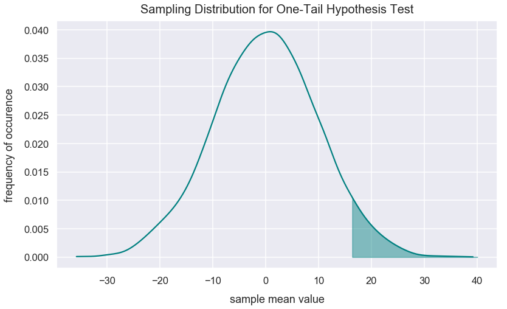
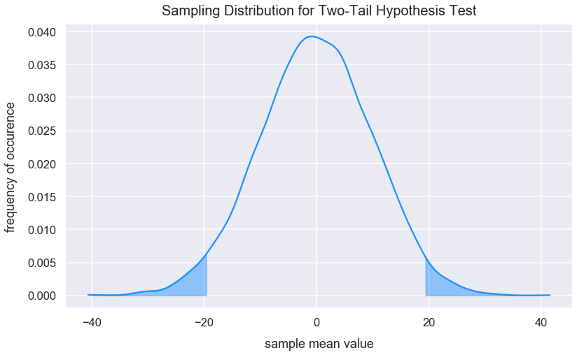
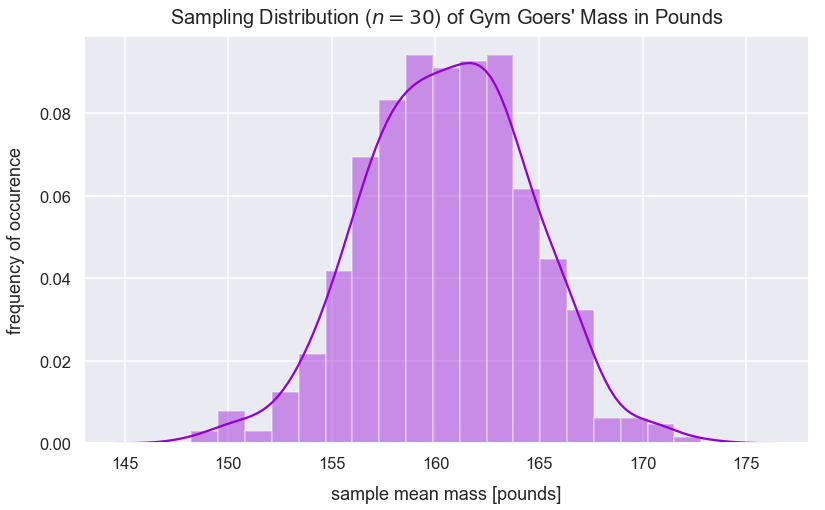
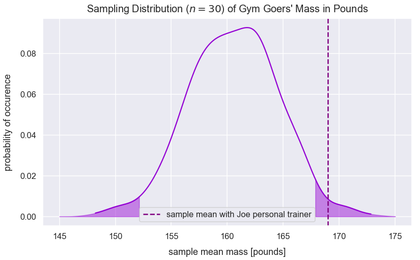
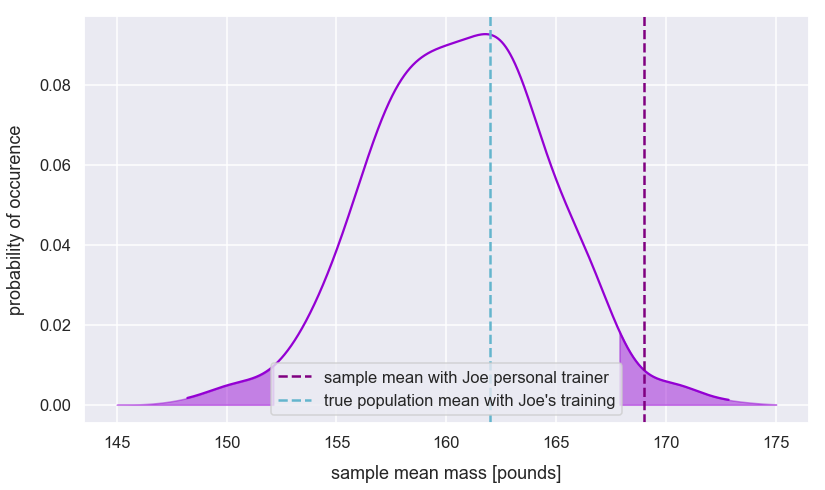

Intro to Hypothesis Testing and z-tests
- Jan 8 • 26 min read
- Key Terms: p-values, sampling distribution, standard error, z-score, statistics, standard deviation, normal distribution, python
In the field of inferential statistics, we make hypotheses - proposed explanations typically made on the basis of limited evidence that's used as a starting point for further investigation. Statistical hypothesis testing helps determine the probability that a given hypothesis is true using a dataset.
A z-test is validating if a sample parameter (such as the mean) is significantly different than a population parameter when the sample mean has a treatment effect. I'll explain how hypothesis testing works through many examples of z-tests below.
I'll explain why the word significantly is in italics later on too.
Before reading this post, I'd recommend familiarity with the following terms: z-scores, normal distribution, standard deviation, standard error and the central limit theorem.
Import Modules
import seaborn as sns
import scipy.stats as stats
import numpy as np
import random
import warnings
import matplotlib.pyplot as plt
% matplotlib inline
Visualization styling code
sns.set(rc={'figure.figsize':(13, 7.5)})
sns.set_context('talk')
Turn Off Warnings
I turn warnings off in this post because of an issue in Scipy that will be fixed in a later version.
warnings.filterwarnings('ignore')
Data Requirements for z-tests
Certain conditions must hold true in the data in order to properly utilize z-tests.
1) Population mean and population standard deviation must be known.
2) Sample mean is known.
3) Assumption or test that the sample of data offers some variation and therefore would form a normal distribution by resampling - consistent with the Central Limit Theorem.
4) Sample observations were randomly drawn from a population.
5) Sample size is known and sufficiently large - often \(n>=30\).
6) Assumption that the population from which the sample is drawn from is approximately normal.
Hypothesis Tests Order of Steps for z-tests
Below are the steps used for performing a hypothesis test to compare a single sample group with treatment to a population and determine the statistical significance. This article will mainly detail steps 2 - 4 and 6 - 8.
1) Take measurements from a large control group we'll call the population.
2) Declare a null and alternative hypothesis. - This information provides background for a one-tail or two-tail test.
3) Decide on an alpa level - the probability of obtaining a sample mean with treatment from the population.
4) Apply a treatment to a new sample group of size \(n\) and record measurements. - We want to compare this treatment group to our population to see if this treatment had an effect.
5) Take a sufficient number of samples of size \(n\) from the population values and record a single statistic of each sample such as the mean or median. This is called the sampling distribution. - A distribution of these sample means (or medians) would be a normal distribution based on the Central Limit Theorem.
6) Verify data collected meets the requirements needed to run a z-test (see section above).
7) Calculate the standard deviation of the sampling distribution - called the standard error.
8) Compute how many standard errors the statistic (such as the mean) of the sample group with treatment is from the statistic (such as the mean) of the sampling distribution. This is called the z-score.
9) Determine if this sample group with treatment is significantly different from the population based on the pre-decided alpha level.
One-Tail Hypothesis Tests
Visualization of One-Tail
Below, this normal distribution has an area under the curve of \(1\). This visualization shades just the right-tail of the distribution that has an area under the curve of just \(0.05\) equivalent to \(5\%\).
values = np.random.normal(loc=0, scale=10, size=6000)
two_std_from_mean = np.mean(values) + np.std(values)*1.645
kde = stats.gaussian_kde(values)
pos = np.linspace(np.min(values), np.max(values), 10000)
plt.plot(pos, kde(pos), color='teal')
shade = np.linspace(two_std_from_mean, 40, 300)
plt.fill_between(shade, kde(shade), alpha=0.45, color='teal')
plt.title("Sampling Distribution for One-Tail Hypothesis Test", y=1.015, fontsize=20)
plt.xlabel("sample mean value", labelpad=14)
plt.ylabel("frequency of occurence", labelpad=14);

For a one-tail test, the critical region (an example is the one shaded above) can be on the left or right side of the distribution. The critical region defines statistically unlikely values.
Levels of Likelihood for One-Tail Test
Below represent values for the probability of getting a sample mean from a sampling distribution along with the equivalent percentage likelihood and z-score.
Additional context: a sampling distribution can have any mean and standard error value. Based on the central limit theorem, the sampling distribution should be approximately normal. A z-score on this sampling distribution tells us the number of standard deviations a sample mean is from the mean of the sampling distribution. Since the sampling distribution is normal, a z-score can always tell us what proportion of sample means are greater than or less than the z-score.
The probability values initially decided upon in hypothesis tests are called \(\alpha\) levels and all are unlikely occurences. I call it unlikely because this sample mean likely didn't occur by random chance. There may have been an effect on that sample mean.
Unlikely Values in Positive Direction One-Tail Tests
Positive direction one-tail tests have the critical region on the right / positive direction of the sampling distribution.
| z-score cutoff for critical region | probability of obtaining sample mean (\(\alpha\) level) greater than corresponding z-score | equivalent percentage likelihood |
|---|---|---|
| \(1.645\) | \(0.05\) | \(5\%\) |
| \(2.33\) | \(0.01\) | \(1\%\) |
| \(3.1\) | \(0.001\) | \(0.1\%\) |
Unlikely Values in Negative Direction One-Tail Tests
Negative direction one-tail tests have the critical region on the left / negative direction of the sampling distribution.
| z-score cutoff for critical region | probability of obtaining sample mean (\(\alpha\) level) less than corresponding z-score | equivalent percentage likelihood |
|---|---|---|
| \(-1.645\) | \(0.05\) | \(5\%\) |
| \(-2.33\) | \(0.01\) | \(1\%\) |
| \(-3.1\) | \(0.001\) | \(0.1\%\) |
With a sampling distribution, a z-score of roughly \(1.645\) has an area under the curve to the left of the z-value of \(0.95\) (\(95\%\) probability). Any z-score greater than \(1.645\) means you're unlikely to sample such a sample from the sampling distribution given an alpha of \(0.05\). The region to the right of that z-value is called the critical region. In this instance, the z-score of \(1.645\) is called the z-critical value.
The cdf() method from the scipy package and accompanying stats module returns the proportion of values smaller than the observation inputted for a standard normal distribution (a normal distribution with a mean of \(0\) and standard deviation of \(1\)). Let's see the area under the curve to the right of these critical z-scores that are the same ones mentioned in the table under Unlikely Values in Positive Direction One-Tail Tests. The probability values returned below are the same as the ones in the table.
1-round(stats.norm.cdf(1.645), 3)
0.050000000000000044
1-round(stats.norm.cdf(2.33), 3)
0.010000000000000009
1-round(stats.norm.cdf(3.1), 3)
0.0010000000000000009
For any sample mean, we can interpret if it's statistically significant - essentially telling us how likely or unlikely this sample mean is within the sampling distribution. The table below only shows examples for a one-tailed hypothesis test.
If the probability of getting a particular sample mean is less than \(\alpha\), it is unlikely to occur. In a z-test, we often say that if the z-score computed is in the critical region, there's likely an effect with the treatment on the sample.
Note below, \(p\) is equivalent to probability and \(\bar{x}\) is the sample mean.
The table below shows interpretations of popular significance levels. Square brackets such as \([\) signify inclusivity of the value next to it while parentheses such as \((\) signify exclusivity of the value next to it.
| z-score range for positive one-tail test | z-score range for negative one-tail test | statistical interpretation | layman's interpretation |
|---|---|---|---|
| [1.645, 2.33) | [-1.645, -2.33) | \(\bar{x}\) is significant at p<0.05 | probability of sampling \(\bar{x}\) from the sampling distribution is less than 0.05 |
| [2.33, 3.1) | [-2.33, -3.1) | \(\bar{x}\) is significant at p<0.01 | probability of sampling \(\bar{x}\) from the sampling distribution is less than 0.01 |
| [3.1, \(\infty\)) | [-3.1, \(-\infty\)) | \(\bar{x}\) is significant at p<0.001 | probability of sampling \(\bar{x}\) from the sampling distribution is less than 0.001 |
When constructing a hypothesis test, it is best to choose a significant level such as the ones above before you perform a test. You can later report the results as significant at a certain critical level after obtaining the result.
If you simply analyze the results for all statistical significance levels, you may be "fishing" for results that don't meet the original purpose of your hypothesis test.
Two-Tailed Hypothesis Tests
This visualization shades two equal areas on each tail of the normal distribution of sample means - also known as the sampling distribution.
Each tail of the distribution has a shaded area of \(0.025\).
values = np.random.normal(loc=0, scale=10, size=6000)
alpha_05_positive = np.mean(values) + np.std(values)*1.96
alpha_05_negative = np.mean(values) - np.std(values)*1.96
kde = stats.gaussian_kde(values)
pos = np.linspace(np.min(values), np.max(values), 10000)
plt.plot(pos, kde(pos), color='dodgerblue')
shade = np.linspace(alpha_05_positive, 40, 300)
plt.fill_between(shade, kde(shade), alpha=0.45, color='dodgerblue')
shade2 = np.linspace(alpha_05_negative, -40, 300)
plt.fill_between(shade2, kde(shade2), alpha=0.45, color='dodgerblue')
plt.title("Sampling Distribution for Two-Tail Hypothesis Test", y=1.015, fontsize=20)
plt.xlabel("sample mean value", labelpad=14)
plt.ylabel("frequency of occurence", labelpad=14);

Below represent values for the probability of getting a sample mean from a sampling distribution along with the equivalent percentage likelihood and z-score.
| probability of obtaining sample mean (\(\alpha\) level) | probability of obtaining sample mean on each tail | percentage of obtaining a sample mean on each tail | z-score cutoff for each tail |
|---|---|---|---|
| 0.05 | 0.025 | 2.5% | \(\pm1.96\) |
| 0.01 | 0.005 | 0.5% | \(\pm2.575\) |
| 0.001 | 0.0005 | 0.05% | \(\pm3.29\) |
Let's see the area under the curve to the left of the z-score for the z-scores listed in the table above.
round(1-stats.norm.cdf(1.96), 3)
0.025
round(1-stats.norm.cdf(2.575), 3)
0.005
round(1-stats.norm.cdf(3.29), 3)
0.001
The table below shows interpretations of popular significance levels. Square brackets such as \([\) signify inclusivity of the value next to it while parentheses such as \((\) signify exclusivity of the value next to it.
| z-score range for two-tailed test | interpretation |
|---|---|
| [1.96, 2.575) or [-1.96, -2.575) | \(\bar{x}\) is significant at p<0.05 |
| [2.575, 3.29) or [-2.575, -3.29) | \(\bar{x}\) is significant at p<0.01 |
| [3.29, \(\infty\)) or [-3.29, \(-\infty\)) | \(\bar{x}\) is significant at p<0.001 |
Hypotheses
Earlier I mentioned hypotheses as proposed explanations typically made on the basis of limited evidence that's used as a starting point for further investigation.
The null hypothesis commonly denoted as \(H_{o}\) assumes a default position of the relationship among two groups. This typically means there is no significant difference in the means of the groups. For z-tests, the two groups are the current population parameters and the new population parameters after some intervention (otherwise called a treatment).
The alternative hypothesis commonly denoted as \(H_{a}\) guesses there will be a significant difference between the current population parameters and the new population parameters after some intervention.
\(\mu_{i}\) represents the new population parameters after some intervention.
The three possible scenarios for a one-tailed and two-tailed tests with explanations for each are as follows:
| alternative hypothesis | interpretation | number of tails | critical region location of tail(s) on sampling distribution to reject the null |
|---|---|---|---|
| \(\mu<\mu_{i}\) | current population parameter will be less than the new population parameter after an intervention | one | positive |
| \(\mu>\mu_{i}\) | current population parameter will be greater than the new population parameter after an intervention | one | negative |
| \(\mu\neq\mu_{i}\) | no prediction on a direction for the treatment | two | positive or negative |
The two-tailed test is most conservative because the probability on each tail is smaller than a tail on a one-sided test. Therefore, we are less likely to reject the null hypothesis.
Note how all scenarios above use \(\mu\) despite the fact we compare the means of a sample (denoted as \(\bar{x}\)) and a population (denoted as \(\mu\)). Why is this? With the treatment on the sample, we try to infer the new population mean if everyone in the population would receive similar treatment.
In a statistical hypothesis test, we often want to provide treatment to just a small sample because that takes less effort and minimizes risk as to not affect the population.
Interpretation of Hypotheses
Here's what it means to reject the null hypothesis:
- The sample mean falls within the critical region.
- The z-score of the sample mean is greater than the z-critical value.
- The probability of obtaining the sample mean is less than the alpha level.
We can't prove the null hypothesis is true. We can only obtain evidence to reject the null hypothesis.
Example Hypotheses
Hypothesis Example #1: Tree Branches
\(H_{o}\): Most trees have more than 20 branches (most = more than 50%).
\(H_{a}\): Most trees have less than 20 branches.
The 50% represents the criteria for our alpha level. This is an example of a one-sided test.
\(\mu_{i}\) represents the mean number of branches for trees that each have less than 20 branches.
\(H_{o}\): \(\mu <= \mu_{i}\)
\(H_{a}\): \(\mu > \mu_{i}\)
Let's say we sample 10 trees and find that all have more than 20 branches.
This sample is evidence that most (greater than 50%) trees have more than 20 branches. We will fail to reject the null hypothesis.
Hypothesis Example #2: Personal Trainer at Gym Effect on Mass
Null hypothesis: having Joe as a personal trainer for three weightlifting workouts per week over the course of a year has no effect on one's mass.
Alternative hypothesis: having Joe as a personal trainer for three weightlifting workouts per week over the course of a year has a significant effect on the client's mass.
\(H_{o}\): \(\mu = \mu_{joe}\)
\(H_{a}\): \(\mu \neq \mu_{joe}\)
To reject the null hypothesis, the sample mean with treatment could be on either end of the sampling distribution. This is considered a two-tailed test.
To gather data for the sampling distribution, assume I visited the gym 24/7 for a month and collected data on \(5,500\) people's mass who claimed to exercise on average three times per week over the last year but didn't have joe as a personal trainer.
To gather data for the treatment group, assume I visited the gym one day and sampled 30 people on their mass who weightlifted at the gym on average three times per week over the past year with Joe's personal training guidance.
Let's set an alpha level for this experiment of \(0.05\).
Below, I create the fictional population data.
population_mean_pounds = 160
population_size = 5500
population_std_dev_pounds = 22
np.random.seed(50)
population_gym_goers_mass = np.random.normal(loc=population_mean_pounds, scale=population_std_dev_pounds, size=5500)
Below, I create the fictional sample data.
n = 30
treatment_sample_mean_pounds = 169
Create the sampling distribution from the population in order to be able to compare with treatment_sample_mean_pounds. I take \(330\) of each \(30\) random values with replacement from the population.
np.random.seed(50)
sample_means = []
for sample in range(0, 500):
sample_values = np.random.choice(a=population_gym_goers_mass, size=n)
sample_mean = np.mean(sample_values)
sample_means.append(sample_mean)
Let's visualize the sampling distribution.
sns.distplot(sample_means, color='darkviolet')
plt.title("Sampling Distribution ($n=30$) of Gym Goers' Mass in Pounds", y=1.015, fontsize=20)
plt.xlabel("sample mean mass [pounds]", labelpad=14)
plt.ylabel("frequency of occurence", labelpad=14);

Let's compute the standard error which is the standard deviation of the sampling distribution. The equation is below:
- \(\sigma\) is population standard deviation
- \(n\) is sample size
standard_error_pounds = population_std_dev_pounds / np.sqrt(n)
standard_error_pounds
4.016632088371218
Let's calculate how many standard errors treatment_sample_mean_pounds is from population_mean_pounds and express this as a z-score.
I can use the following z-score equation:
- \(\bar{x}\) is the sample mean
- \(\mu\) is the population mean
- \(SE\) is the standard error calculated as \(\frac{\sigma }{\sqrt{n}}\)
z_score = (treatment_sample_mean_pounds - population_mean_pounds)/standard_error_pounds
z_score
2.2406831897938613
The initial alpha level is \(0.05\) and this is a two-tailed test. Let's shade both areas of the critical region on the positive and negative side of the sampling distribution. The corresponding z-critical value is \(1.96\). Let's find the mean mass value associated with this z-score on the positive side. We can model this calculation by the equation below:
1.96 = (sample_mean_at_positive_z_critical - population_mean_pounds)/standard_error_pounds
The equation above simplifies to the code below.
sample_mean_at_positive_z_critical = 1.96*standard_error_pounds+population_mean_pounds
sample_mean_at_positive_z_critical
167.8725988932076
Let's find the mean mass value associated with this z-score on the positive side.
sample_mean_at_negative_z_critical = -1.96*standard_error_pounds+population_mean_pounds
sample_mean_at_negative_z_critical
152.1274011067924
Let's visualize where treatment_sample_mean_pounds lies on the distribution of sample mean masses of groups collected at the gym that didn't have the treatment of Joe's personal training.
kde = stats.gaussian_kde(sample_means)
pos = np.linspace(np.min(sample_means), np.max(sample_means), 10000)
plt.plot(pos, kde(pos), color='darkviolet')
shade = np.linspace(sample_mean_at_positive_z_critical, 175, 300)
plt.fill_between(shade, kde(shade), alpha=0.45, color='darkviolet')
shade2 = np.linspace(sample_mean_at_negative_z_critical, 145, 300)
plt.fill_between(shade2, kde(shade2), alpha=0.45, color='darkviolet')
plt.axvline(x=treatment_sample_mean_pounds, linestyle='--', linewidth=2.5, label="sample mean with Joe personal trainer", c='purple')
plt.title("Sampling Distribution ($n=30$) of Gym Goers' Mass in Pounds", y=1.015, fontsize=20)
plt.xlabel("sample mean mass [pounds]", labelpad=14)
plt.ylabel("probability of occurence", labelpad=14)
plt.legend();

The visualization shows treatment_sample_mean_pounds lies in the positive critical region.
I can calculate the probability of randomly selecting a sample mean greater than treatment_sample_mean_pounds by identifying the area under the curve to the right of the sample mean's z-score on a standard normal distribution. its z-score on a standard normal distribution.
p_value = round(1-stats.norm.cdf(z_score), 3)
p_value
0.013
The returned p-value is \(0.013\). The initial alpha level was \(0.05\). The p-value is less than the alpha level.
The equivalent z-score cutoff for each tail is \(\pm1.96\). Above, we calculated a z-score value of \(2.24\) which is greater than \(1.96\).
Therefore, treatment_sample_mean_pounds is significant at \(p<0.05\) so we have obtained sufficient evidence to reject the null hypothesis. There's evidence of an effect of mass gain through 3x per week personal training sessions with Joe over the course of a year.
Continue Gym Personal Trainer Example with Hypothesis Test (of Known True Population Mean)
This type of statistical analysis is prone to misinterpretation. It's possible that those sampled and treated by Joe's personal training already had a history of major weight gain through lifting or had not hit a plateua yet with their potential to gain weight. So, they could have been ideal candidates for Joe to push them to gain muscle rapidly. If either of those scenarios are the case, it's possible that the new estimated population parameters with the treatment are slightly biased.
Given this misinterpretion or another issue, our hypothesis testing may result in an error.
Earlier, I concluded treatment_sample_mean_pounds was significant at \(p<0.05\) because I obtained sufficient evidence to reject the null hypothesis. There was evidence of an effect of mass gain through 3x per week personal training sessions with Joe over the course of a year.
Additionally, let's assume we found the true population mean of people's mass sampled at the gym for everyone after one year of 3x per week personal training sessions with Joe was \(162\) pounds. In real life, we wouldn't know this value of \(162\) because the treatment hasn't taken effect on the population in a study. However, in this example, let's pretend we do.
Let's assign the variable true_population_mean_pounds_with_joe_training to 162.
true_population_mean_pounds_with_joe_training = 162
In the equation for the z-score, we can utilize this new value to see how many standard errors treatment_sample_mean_pounds lies from true_population_mean_pounds_with_joe_training.
z_true = (treatment_sample_mean_pounds - true_population_mean_pounds_with_joe_training)/standard_error_pounds
z_true
1.7427535920618922
plt.plot(pos, kde(pos), color='darkviolet')
shade = np.linspace(sample_mean_at_positive_z_critical, 175, 300)
plt.fill_between(shade, kde(shade), alpha=0.45, color='darkviolet')
shade2 = np.linspace(sample_mean_at_negative_z_critical, 145, 300)
plt.fill_between(shade2, kde(shade2), alpha=0.45, color='darkviolet')
plt.axvline(x=treatment_sample_mean_pounds, linestyle='--', linewidth=2.5, label="sample mean with Joe personal trainer", c='purple')
plt.axvline(x=true_population_mean_pounds_with_joe_training, linestyle='--', linewidth=2.5, label="true population mean with Joe's training", c='c')
plt.xlabel("sample mean mass [pounds]", labelpad=14)
plt.ylabel("probability of occurence", labelpad=14)
plt.legend();

The visualization shows true_population_mean_pounds_with_joe_training is not in a critical region.
Our initial alpha level was \(0.05\). The equivalent z-score cutoff for each tail is \(\pm1.96\).
The z_true value (for the true population mean) is less than the z-critical value of \(1.96\); the ground truth about the population \(H_{o}\) is true. Having Joe as a persoanl trainer for three weightlifting workouts per week over the course of the year has no effect on one's mass. However, our earlier decision based on the sample with treatment was to reject the null hypothesis. In this instance, we committed a Type 1 error!
Effect of Parameters on Treatment Effect
For hypothesis testing, we typically use the following two equations to calculate the standard error (SE) and a z-score for a sample mean:
- \(\sigma\) is population standard deviation
- \(n\) is sample size
- \(\bar{x}\) is the sample mean
- \(\mu\) is the population mean
- \(SE\) is the standard error calculated as \(\frac{\sigma }{\sqrt{n}}\)
An effect that exists is more likely to be detected with a change in the following variables utilized in the equations above:
- \(n\) is larger (results in smaller SE and z-score farther from 0)
- \(\sigma\) is smaller (results in smaller SE and z-score farther from 0)
- \(\mu\) farther from \(\bar{x}\) (results in z-score farther from 0)